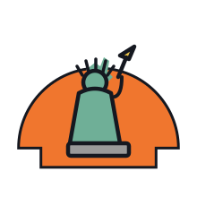

Open from day one. The repo, the wiki, the parts, the paper, the apps — everything to build, run, or follow along, in one place.

Every link worth having — the code, the manual, the parts, the paper, and all four live studios.
The monorepo — ROS 2 stack, whole-body control, learning, firmware, simulation, CAD meshes. MIT licensed.
The build manual on this site — assembly, electronics, firmware, bring-up, operation, troubleshooting.
The whole build, in order: BOM, mechanical, wiring, PCBs, firmware, software, simulation, bring-up, teleop, learning, and what usually goes wrong. Community-written.
The interactive BOM — 49-line core, three build tiers, live totals, CSVs and printable PDFs.
The full technical report — methods, experiments, and results.
The simulation cockpit in your browser — 3-D viewer, teleop, telemetry. No install.
Pilot cockpit, live 3-D twin, tap-to-go navigation and the skill library — the robot in your pocket.
Stereo passthrough from the robot's head, and your own hands driving both arms at 60 Hz.
The operator console on an in-browser twin — works on a phone, nothing to set up.
Final-Cut-style curation for imitation-learning episodes → clean LeRobot datasets.
Explore ACT / Diffusion / π₀ graphs, then queue a real training job on the GPU.
The bring-up assistant — actuator IDs, buses, calibration. Runs on your machine.
Four films: what MABEL is, how the paper's results were produced, how to build one, and what a week of building actually looks like.